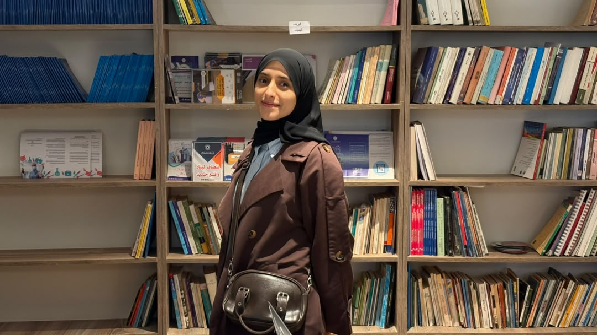

Jisr: mental health support app
An Arabic-native app that helps people find the first words to reach out to someone they trust. Built with my team at a codeathon.
I'm a senior Artificial Intelligence student at Libyan International University in Benghazi. I turn data into answers, teach computers to see, and build robots with my team.

An Arabic-native app that helps people find the first words to reach out to someone they trust. Built with my team at a codeathon.

A U-Net model that outlines brain tumors in MRI scans, presented as a research poster.

Our Samsung Innovation Campus capstone, forecasting crude oil markets and inventory from 35 years of weekly data.